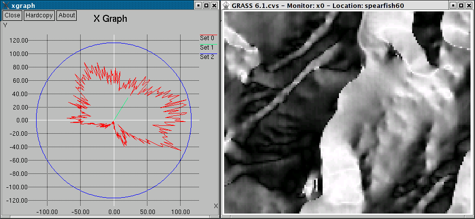

DESCRIPTION
d.polar calculates and displays a polar diagram of an
angle raster map such as aspect, wind direction, or flow.
The input angle map orientation must be counter-clockwise (CCW)
from east, and the angle map units must be degrees. This refers
to the standard orientation of GRASS (e.g., see r.slope.aspect).
The radius of the outer circle is defined by the total number
of pixels in the map. If the polar diagram does not reach the
outer circle, no data (NULL) pixels were found in the map.
The vector in the diagram indicates a prevailing direction, its length
the strength of such direction. In case all angle vectors are oriented
along the same direction, the length for the vector is maximal (in fact
it is equal to length of the most populated bin of the underlying histogram).
As a side effect, the quality of the angle map can be derived from
the diagram. Strong spikes may indicate an over-representation of
the related angle(s) which happens in particular if integer maps
are used.
NOTES
If the output parameter is used, the diagram is generated
as EPS file. If the -x flag is used xgraph is launched.
Otherwise d.polar will use d.graph to draw the plot
in the current display frame.
If d.polar is used on an aspect map generated by
r.slope.aspect, the undef parameter should be
set to 0 to distinguish NO DATA (NULL) areas from areas where
aspect is undefined (i.e. flat areas).

Polar diagram of aspect map
EXAMPLE
In this example, the polar diagram of the 'aspect' angle map in the
North Carolina sample dataset location is generated:
g.region raster=aspect -p
d.polar aspect
SEE ALSO
d.graph,
d.histogram,
d.rast.arrow,
r.slope.aspect
XGRAPH REQUIREMENT
Xgraph must be installed for the
-x flag to function.
REFERENCES
J. Hofierka, H. Mitasova, and M. Neteler (2009): Terrain parameterization in GRASS.
In T. Hengl and H.I. Reuter, editors, Geomorphometry: concepts, software, applications. Elsevier
(DOI)
AUTHORS
Markus Neteler, ITC-irst, Italy
Bruno Caprile, ITC-irst, Italy
Hamish Bowman, Otago University, New Zealand